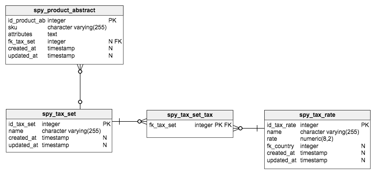
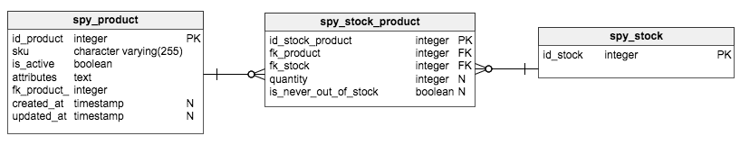
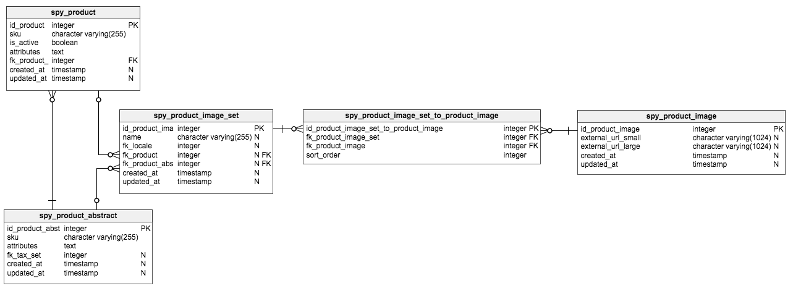

Product Information Management (PIM)
Creating a Product in Spryker Commerce OS
In Spryker Commerce OS products can be imported or created using the PIM. Creating the product using PIM starts by defining an abstract product with all of its information. Afterwards the different concrete products (product variants) of this abstract product can be created. This 2 steps workflow allows concrete products (product variants) to inherit some generic initial information from the related abstract product. All information can be translated to different languages in the creation process. The creation of concrete products (product variants) requires super product attributes to be configured in advance.
SKU
Both, abstract and concrete products have an SKU as a means to identify them. A custom SKU can be provided during abstract product creation process in the Zed Admin UI. The SKUs of your concrete products are currently generated by adding super product attribute data to the abstract product's SKU.
Price & Taxes
Both, abstract and concrete products have a price. If the concrete product does not specify a price, it will be inherited from the abstract product. In the current demoshop implementation, the abstract product's price is displayed until the customer selects a concrete product. Taxes are attached to the abstract product only, therefore all concrete products of an abstract product share the same tax configuration. Taxes can be managed through the tax Zed Admin UI.

Stock
The stock of each concrete product can be managed per store in the PIM. The option "is never out of stock" is also available for each concrete product. In the current demoshop implementation, the stock is not displayed for customers.

Product Attributes & Variants
There are 2 types of product attributes
- super product attributes: used to distinguish between the concrete products of an abstract product. These attributes are permanently attached to each concrete products at creation.
- regular product attributes: used to display information in the shop or to enhance search/filter criteria. These attributes can be freely managed for each concrete product.
Image Sets
Both, abstract and concrete products can have image sets. An image set contains 1 or more images. Each image set can be used for different purposes.
For example: an image set is displayed in the product detail page, the other image set is used for marketing purposes elsewhere.

URL
The URL is created after activation and cannot be changed in the Zed Admin UI. Although it is possible to alter the URL in the database directly, but it always has to be unique.
Store Relation
The store relation of the abstract products can be modified on demand. By default the abstract products exist in all stores, but this relation can be managed per store. When an abstract product exist in a store, all of its concrete products exist in that store. See further information here.
See also:
Last review date: Dec. 12 th, 2017